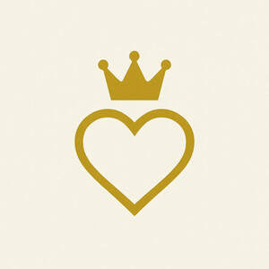
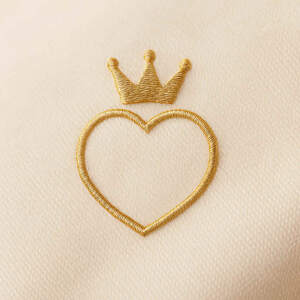

Trade Mark Journal No.2025/026 27 June 2025
UK00004216931 10 June 2025 (18,25)
Mark 1

Mark 2

- Class 18
- Bags; Carry-on bags; Toiletry bags; Bags for clothes; Cross-body bags; Cloth bags; Clutch bags; Travel bags; Bags for travel; Toilet bags; Make-up bags; Cosmetic bags; Waterproof bags; Makeup bags; Overnight bags; Beach bags; Mesh shopping bags; Mesh bags for shopping; Hiking bags; Knitting bags; Wash bags for carrying toiletries; Waist bags; Gym bags; Athletic bags; Garment bags; Garment bags for travel; Bags (Garment -) for travel; Travel garment covers; Flexible bags for garments.
- Class 25
- Clothing; Knitwear [clothing]; Jackets [clothing]; Ready-to-wear clothing; Woolen clothing; Linen clothing; Headbands [clothing]; Headbands for clothing; Clothes; Denims [clothing]; Shorts [clothing]; Underwear; Jockstraps [underwear]; Briefs [underwear]; Sweat-absorbent underclothing [underwear]; Trunks [underwear]; Sweat-absorbent underwear; Underwear (Anti-sweat -); Anti-sweat underwear; Knitted underwear; Undergarments; Underwear for women; Thermal underwear; Underpants; Functional underwear; Underclothes; Women's underwear; Long underwear; Panties; Teddies [undergarments]; Ladies' underwear; Lingerie; Slips [undergarments]; Knickers; Pants; Bottoms [clothing]; Jogging bottoms [clothing]; Underclothing; Leggings [trousers]; Dress pants; Gloves [clothing]; Gloves as clothing; Undershirts; Pajamas; Trouser socks; Underclothing (Anti-sweat -); Anti-sweat underclothing; Socks and stockings; Sweat-absorbent underclothing; Silk clothing; Bodices [lingerie]; Pyjamas; Jogging pants; Bra straps [parts of clothing]; Trousers; Slips [underclothing]; Tops [clothing]; Swimsuits; Slips [clothing]; Beach clothes; Bandeaux [clothing]; Waterproof clothing; Sleep pants; Sweat-absorbent socks; Bed socks; Pantyhose; Sweatpants; Bras; Warm-up pants; Mitts [clothing]; Womens' undergarments; Underclothing for women; Bathing costumes for women; Ladies wear; Clothing for children; Clothing for cyclists; Clothing for gymnastics; Trousers for children; Bodies [clothing]; Clothes for sports; Clothing for leisure wear; Clothes for sport; Sleeping garments; Clothing for cycling; Jackets being sports clothing; Sports pants; Knitted clothing; Clothing for sports; Sports clothing; Fashion hats; Dance clothing; Face masks [fashion wear] ; Baby doll pyjamas; Girls' clothing; Footwear for women; Casual clothing; Dresses; Athletic clothing; Jogging outfits; Playsuits [clothing]; Outerclothing for girls; Beach clothing; Dresses for evening wear; Pinafore dresses; Dress shoes; Jumper dresses; Nightwear; Swimwear; Negligees; Shapewear; Teddies [underclothing]; Sleepwear; Bikinis; Body stockings; Nightgowns; Camisoles; Bra straps; Bralettes; Bustiers; Straps for bras; Beachwear; Nighties; Loungewear; Cashmere clothing; Sports bras; Sleep masks; Masks (Sleep -); Sleep shirts; Bed jackets; Night shirts; Casual footwear; Sportswear; Parts of clothing, footwear and headgear; Footwear; Leisure clothing; Articles of sports clothing; Knitwear; Articles of clothing; Sports garments; Footwear for sports; Sports footwear; Clothing for skiing; Gym shorts; Yoga pants; Exercise wear; Yoga shirts; Gymwear; Yoga socks; Sport shirts; Sport coats; Sports wear; Sports socks; Sports shirts; Embroidered clothing; Under garments.
Caloia Capital Ltd